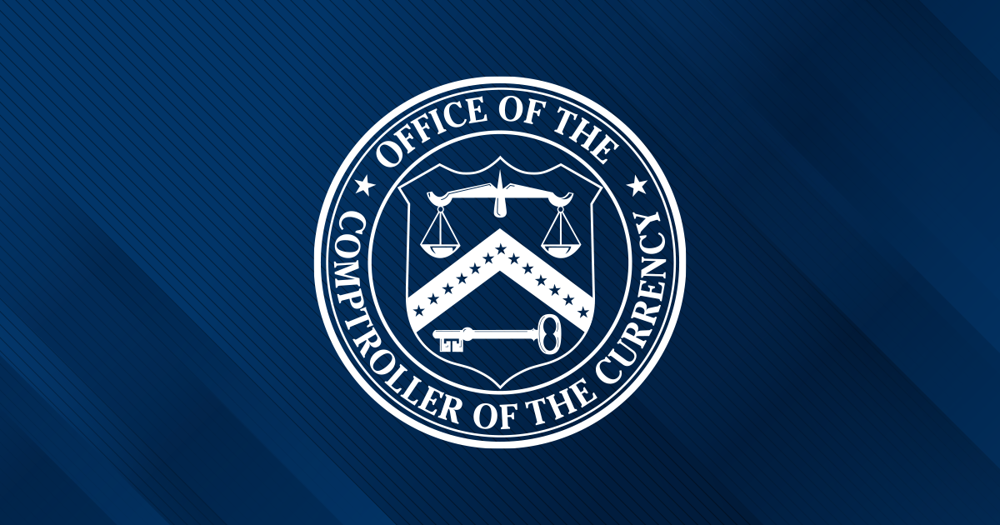

07 미국 통화감독청 보도일 2026.09.10
미국 OCC, 총자산 60억 달러 미만 검사 완화

이번 발표는 상품 출시가 아니라 감독 주기 조정이다. OCC는 소형 기관의 현장 검사를 덜 자주 해도 되는 범위를 넓혔다. 대상 기관은 검사 대응 비용을 줄일 수 있고, 감독 자원도 다시 배분된다.
무슨 일이 있었나
미국 통화감독청(OCC)이 중간 최종 규칙을 발표했다. 이 규칙은 일부 감독 대상 기관이 18개월 현장 검사 주기를 적용받는 자산 기준을 높였다. 기존 기준은 총자산 30억 달러 미만이었다. 새 기준은 총자산 60억 달러 미만이다.
- 적용 효과: 현장 검사 주기를 12개월에서 18개월로 연장 가능
- 새 대상 규모: 약 50곳의 OCC 감독 기관 추가
- 법적 근거: 21st Century ROAD to Housing Act
- 적용 대상 표현: certain supervised institutions, insured depository institutions, 외국은행의 미국 지점과 대리점
OCC는 검사 주기 연장으로 해당 기관이 비용을 줄일 수 있다고 밝혔다. 절감한 자원은 다른 업무에 다시 배치할 수 있다고 설명했다.
왜 지금 나왔나
이번 조치는 21st Century ROAD to Housing Act에 따른 것이다. OCC는 그동안 커뮤니티 은행의 감독 부담을 줄이기 위한 조치를 연속해서 내놨다. 검사 범위와 빈도를 위험 기반으로 조정했고, 일부 중복 자료 수집도 없앴다.
규칙의 내용과 적용 범위
핵심 변경점은 18개월 검사 주기를 적용할 수 있는 총자산 기준 상향이다. 기준이 30억 달러에서 60억 달러로 올라가면서 더 많은 기관이 연장 주기를 쓸 수 있게 됐다. 원문 발췌는 세부 적격 요건 전부를 싣지 않았다. 위반 효과나 추가 절차도 발췌에는 나오지 않는다.
| 항목 | 기존 | 변경 |
|---|---|---|
| 18개월 검사 주기 자산 기준 | 총자산 30억 달러 미만 | 총자산 60억 달러 미만 |
| 현장 검사 주기 | 12개월 | 18개월 |
| 추가 대상 기관 수 | - | 약 50곳 |
국내와의 접점
원문은 국내 적용에 대해 언급하지 않았다.
우리 업무로 옮기면
미국 은행과 연결된 계좌, 수탁, 자금 이동 서비스를 다루는 팀은 감독 대응 일정이 바뀌는지 먼저 볼 만하다. 파트너 은행의 검사 주기가 길어지면 자료 요청 시점과 심사 우선순위가 달라질 수 있다. 반대로 내부 통제가 느슨해졌다고 보면 안 된다. 위험 기반 감독으로 옮겨 가는 만큼, AML, 판매 적합성, 비예금 투자상품 같은 항목은 기관별로 더 선별적으로 점검받을 수 있다. 대외계 연계 팀은 미국 파트너의 실사 체크리스트가 바뀌는지 확인해 두는 편이 안전하다.
주요 용어
원문 정보
제목: OCC Advances Community Bank Comeback, Reduces Exam Burden for Smallest Institutions
보도일: 2026.09.10
출처 URL: https://www.occ.gov/news-issuances/news-releases/2026/nr-occ-2026-76.html